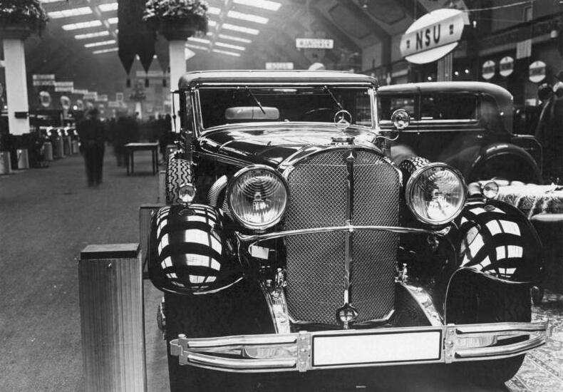
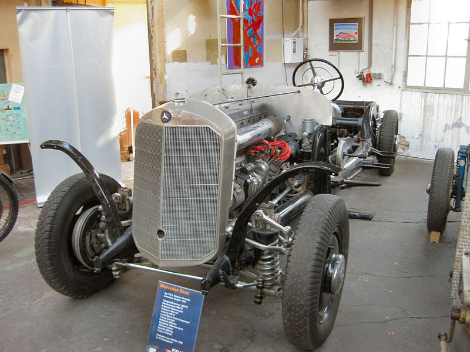

Покупка автомобиля
Когда я рассматривал покупку автомобиля в Германии в 1920-1930 годах, это было время грандиозных перемен. После первой мировой войны страна переживала трудные времена, но автомобиль стал символом процветания и нового начала. Многие из моих знакомых и друзей мечтали о собственном транспортном средстве, и я не был исключением. Выбор автомобиля в это время был довольно ограничен. Несмотря на это, немецкая автомобильная промышленность начала активно развиваться. Марки как Mercedes-Benz, BMW, Opel и Volkswagen стали известными и популярными. Каждый из них предлагал свои уникальные модели, и выбор был непрост.
Помню, как я изучал характеристики различных моделей, сравнивал цены и прокладывал маршруты для будущих поездок. Покупка автомобиля была серьезным шагом, требующим внимательного подхода и финансовых затрат. Но я был готов к этому вызову. Одним из ключевых моментов при выборе автомобиля было его качество и надежность. В то время автомобили были еще довольно редким явлением на дорогах, поэтому важно было выбрать транспортное средство, которое не подведет в самый неподходящий момент.
Помимо технических характеристик, я также обращал внимание на дизайн и комфорт автомобиля. Ведь покупка автомобиля в эти времена была не только средством передвижения, но и статусным символом. Я мечтал о красивом и элегантном автомобиле, который вызывал бы восхищение у окружающих. Когда настал день покупки, я почувствовал смешанные чувства радости и волнения. Это был не просто автомобиль, а новый этап в моей жизни, возможность исследовать новые места и познакомиться с новыми людьми. Купил я себе Mercedes-Benz. Первая поездка на своем автомобиле стала для меня незабываемым опытом.
